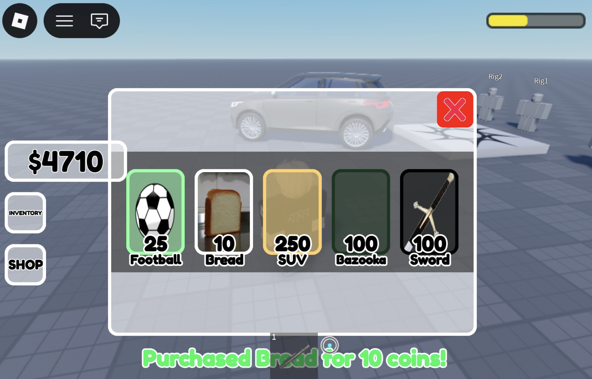
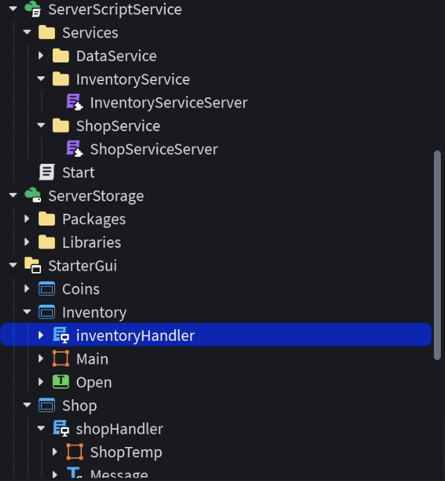
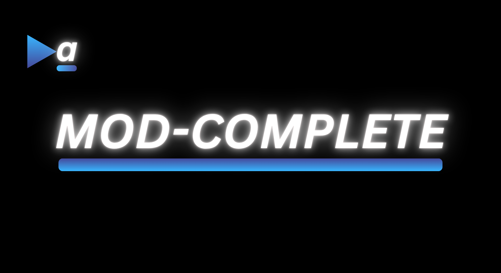
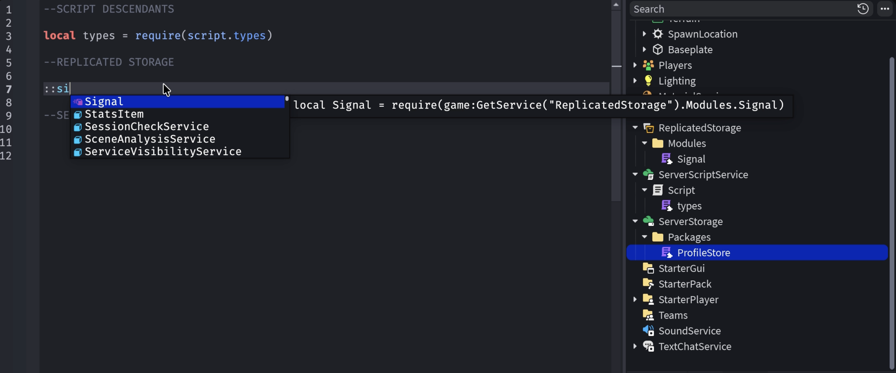

Modular & Data-Saving Inventory & Shop System
An inventory and shop system with modular code utilizing ProfileStores for safe Data-Saving.

Videos
Project Showcase:
Project Brief Explanation:
Code
Hierarchy:

Server Code:
Loading code from gist...Client Code:
Loading code from gist...Module Requirement and Service Referral Autocomplete Plugin

A plugin that features autocompletion suggestions for modules and services. A simple prefix like "::" is typed, and as you type, the plugin will search through existing modules to suggest.

More info on the Roblox DevForum →